18
Kohli Paglu
A scroll through the innings of Virat Kohli - Delhi ground to World Cup night, one loyal club shirt the whole way through. Still being written.
TEST · WHITES
ODI · BLUE
T20I · TEAL
RCB · RED & GOLD
A scroll through the innings of Virat Kohli - Delhi ground to World Cup night, one loyal club shirt the whole way through. Still being written.
Born 5 November 1988 in Delhi, Kohli started at the West Delhi Cricket Academy at nine years old under coach Rajkumar Sharma - the only coach he's ever had. At fourteen he was already captaining Delhi's Under-15 side; a year later he made 470 runs across four Vijay Merchant Trophy innings, including a top score of 251 not out.
He made his first-class debut for Delhi in November 2006, out for 10. Weeks later, on 18 December 2006, his father Prem Nath Kohli died overnight from a stroke. Kohli batted for Delhi against Karnataka the next morning anyway, made 90 to help save the follow-on, then left for the funeral. It's the story teammates still tell about where the resolve came from.
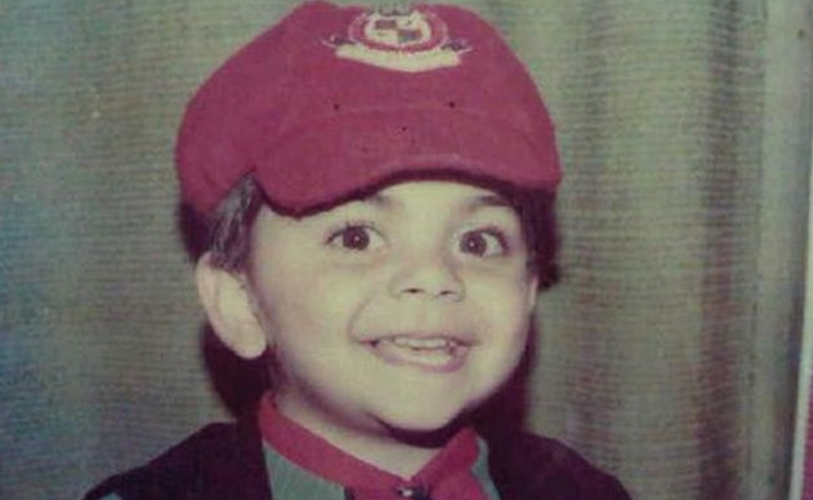
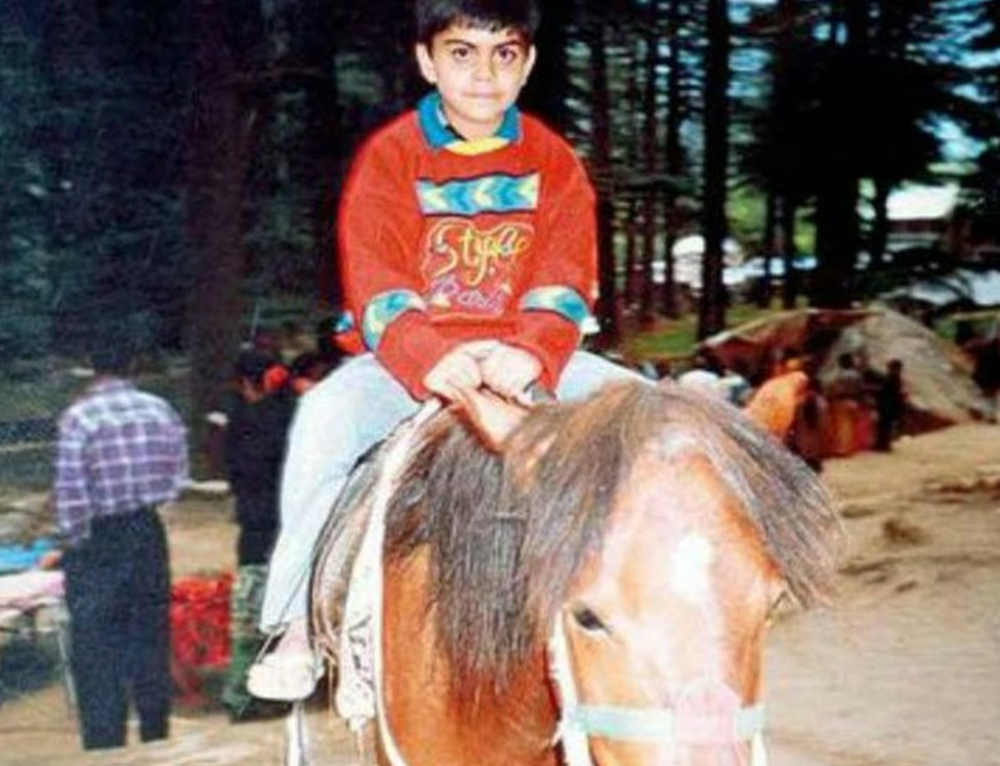
Before all of it: a Delhi childhood.A tour of England with the India Under-19s in 2006 was followed by the job that mattered: captain of the side that won the 2008 Under-19 World Cup in Malaysia, Kohli scoring 235 runs at an average of 47 through the tournament.
Weeks later, the inaugural Indian Premier League auction picked him up for Royal Challengers Bangalore - for $30,000. He would never play for another franchise.
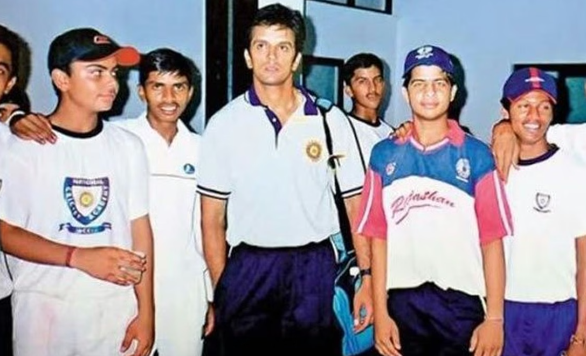
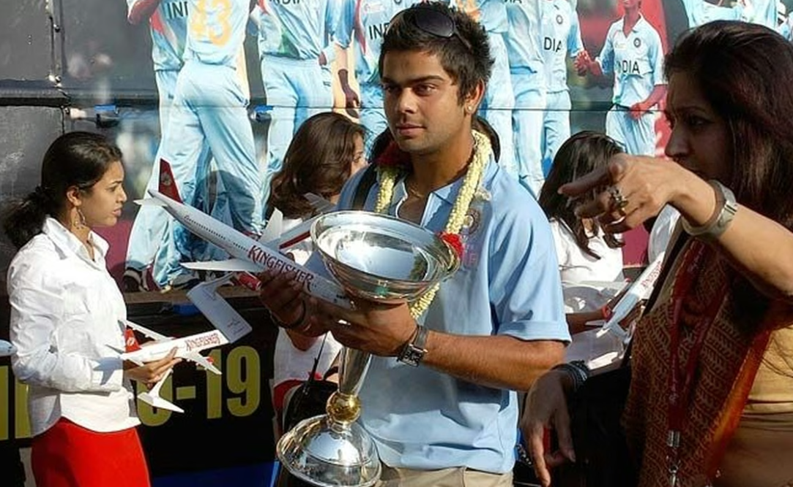
His ODI debut came on 18 August 2008 against Sri Lanka in Dambulla - a surprise call-up, out for 12 first time up. His maiden ODI century followed that December, and by 2010 he was the fastest Indian to 1,000 ODI runs. His Test cap came on 20 June 2011 at Kingston.
The debut, Dambulla, 18 August 2008.
In between, a 22-year-old squad member played his part in India's 2011 World Cup win on home soil, scoring 35 in the final at Wankhede.
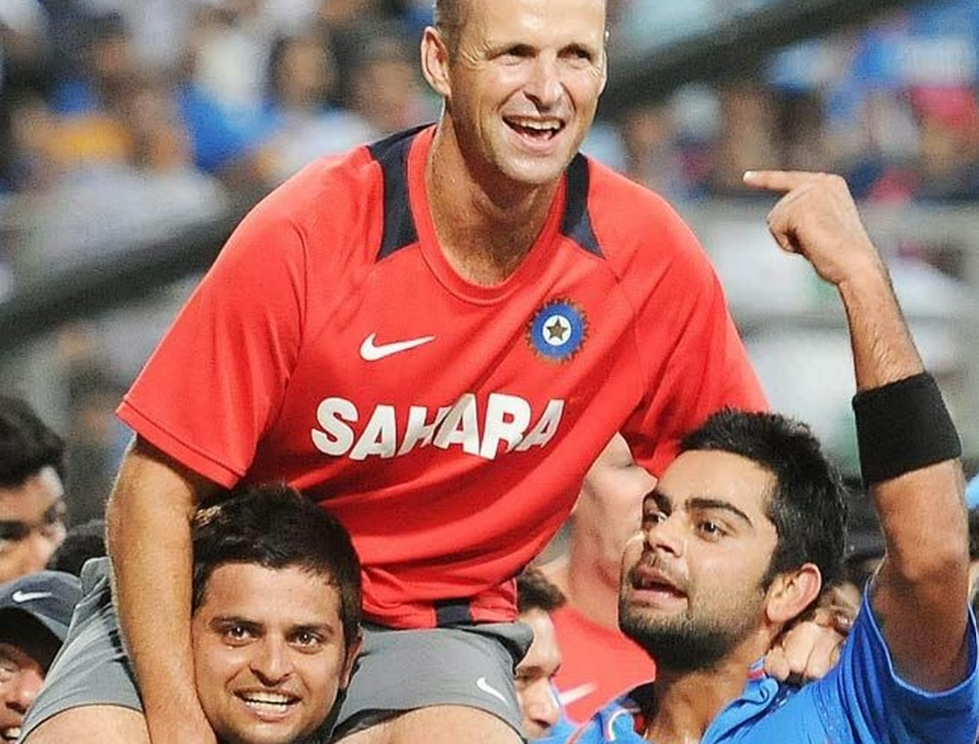
His maiden Test century came in Adelaide in January 2012. Six weeks later in Hobart, chasing 321 against Sri Lanka, he made an unbeaten 133 off 86 balls - 24 runs off a single Lasith Malinga over - and got India home with 80 balls to spare. Fans would later vote it the best of his 50 ODI hundreds.
Hobart, 28 February 2012 - from cricket.com.au's archive.
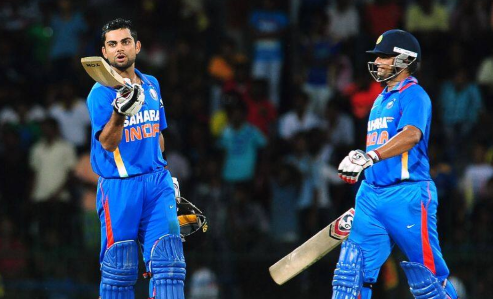
A month after that, at the Asia Cup in Dhaka, he made a career-best 183 off 148 against Pakistan. He was named ODI vice-captain, then lifted the 2013 Champions Trophy in that role as India went unbeaten through the tournament. In March 2013 he set up the Virat Kohli Foundation, years before athlete philanthropy was the norm in Indian cricket.
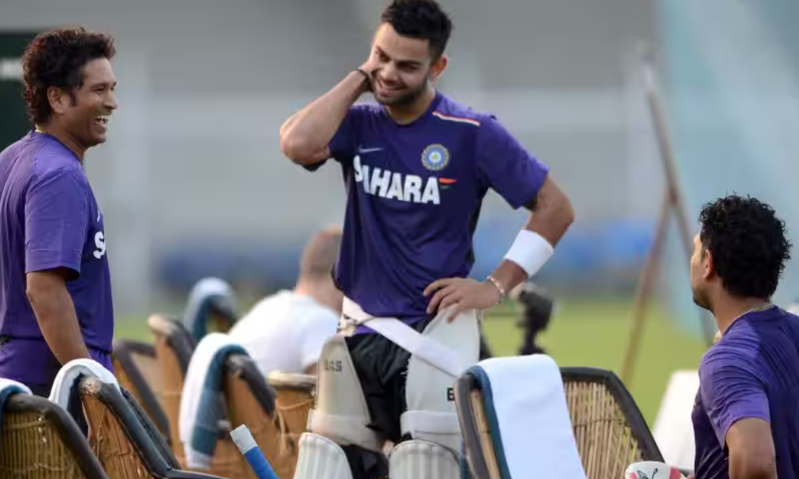
When MS Dhoni retired mid-series in Australia in December 2014, the Test captaincy passed to Kohli - and in the very next Test, at Adelaide, he made 115 and 141 in the two innings, chasing an almost-impossible target instead of playing for the draw. India lost by 48 runs, but the message was sent: 692 runs in the series, still the most ever by an Indian batter in Australia.
The first of the Adelaide tons - from cricket.com.au's archive.
Months later at the 2014 World T20 he was Player of the Tournament with 319 runs; a year after that, a century against Pakistan lit up the 2015 World Cup. Full control of all three formats followed by 2017.
March 2016: a virtual-knockout T20 World Cup game against Australia at Mohali, chasing 161 with the required rate ballooning past ten an over - Kohli finished unbeaten on 82 off 51, a knock MS Dhoni called incredible and Kohli still rates his best in the format. Two months later he battled through 113 off 50 for RCB with nine stitches in a split webbing, in a rain-shortened 15-over game - his fourth century of a season that finished with a still-standing record 973 IPL runs.
113 off 50, nine stitches, RCB vs Kings XI Punjab, May 2016.
Then the Test batting went somewhere no one had been: double centuries in four consecutive series - West Indies (Antigua, July 2016), New Zealand (October 2016), England (December 2016) and Bangladesh (February 2017). No batter, not Bradman, not Dravid, had ever done that.
235 vs England, Mumbai, December 2016 - the third of the four.
He kept going - 243 at home in Delhi that same December, his sixth double century, then 593 runs across a losing 2018 tour of England, then a first-ever Indian Test series win in Australia in 2018–19, then a career-best 254 not out against South Africa in Pune in October 2019 - his seventh Test double century, more than anyone else in Indian history.
254 not out vs South Africa, Pune, October 2019 - his career-best score.
The honours followed: Padma Shri in March 2017, the Khel Ratna - India's highest sporting award - in September 2018, and the No. 1 Test batting ranking. He married Anushka Sharma in Florence that December.

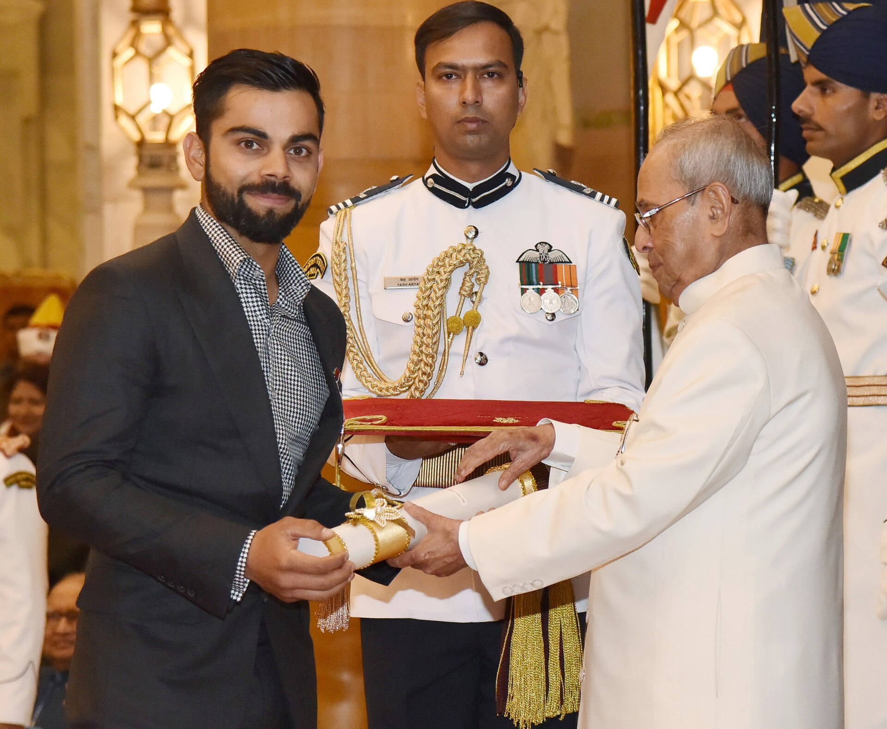
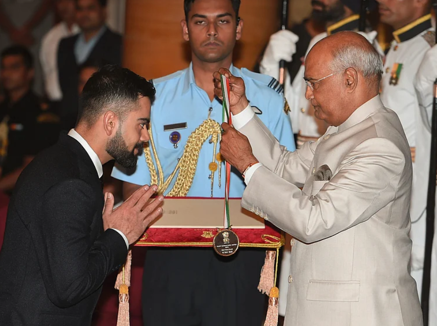
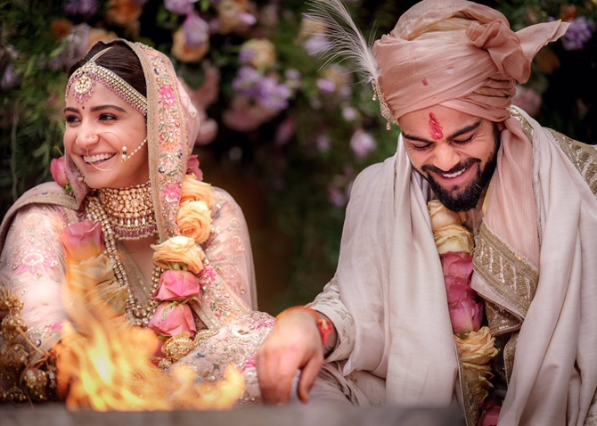
His 70th international century came in November 2019. Then nothing - no hundred, in any format, for nearly three years. Form dipped, and the captaincy went with it: T20I first, then ODI, then Test, handed over one format at a time between 2021 and January 2022. His daughter Vamika was born that January, a quiet counterweight to a very public slump.
He kept working. In 2021 he put ₹2 crore of his own money into a COVID relief fund and helped raise over ₹11 crore more. The runs, everyone assumed, would come back eventually. Nobody knew exactly when.
The drought broke on 8 September 2022 - an unbeaten 122 against Afghanistan at the Asia Cup, 1,020 days since the last one. Six weeks later, at the T20 World Cup against Pakistan at the MCG, he made 82 not out off 53 balls, chasing 160 from 31 for 4, finished with a slower ball from Haris Rauf lifted straight down the ground for six - a shot the ICC later called the Shot of the Century. Kohli said afterwards he rated it higher than any innings he'd played, given the occasion.
82 not out off 53, the MCG, 23 October 2022.
Ninety thousand people at the MCG watched the King get his crown back.
Kohli walked into the year in ominous form: back-to-back IPL centuries that May - 100 off 63 against Sunrisers Hyderabad, then 101 not out against Gujarat Titans, the innings that took him past Chris Gayle for the most centuries in IPL history.
Back-to-back IPL centuries, vs SRH then GT, May 2023.
In September, an unbeaten 122 against Pakistan at the Asia Cup made him the fastest to 13,000 ODI runs.
122 not out vs Pakistan, Asia Cup Super 4, Colombo, September 2023.
Then the World Cup itself, at home: 765 runs, Player of the Tournament. On his 35th birthday, 5 November, he equalled Sachin Tendulkar's 49 ODI centuries against South Africa at Eden Gardens, in front of 60,000 people.
The 49th ODI century, on his birthday, Eden Gardens, 5 November 2023.
Ten days later in the semifinal against New Zealand at Wankhede - the same ground India won the 2011 final - he went one better: his 50th ODI century, past Tendulkar's record, with Tendulkar himself watching from the stands. India still lost the final, to Australia.
The 50th ODI century, semifinal vs New Zealand, Wankhede, 15 November 2023.
His son Akaay was born in February 2024. Four months later in Barbados, the T20 World Cup final against South Africa went the other way - Kohli's 76 off 59 anchored the chase, India won by seven runs, and he retired from T20Is before he'd even left the ground.
The 2024 T20 World Cup final, Barbados - ICC's own recap.

At the 2025 Champions Trophy in Dubai, Kohli made an unbeaten 100 off 111 - his 51st ODI century - to see off Pakistan in the group stage, then 84 against Australia in the semifinal, helping India to their third Champions Trophy title - and, along the way, becoming the fastest to 14,000 ODI runs.
The winning shot, 51st ODI century, vs Pakistan, Dubai, February 2025.
Ten weeks later, on 12 May 2025, he announced his retirement from Test cricket - 123 matches, 9,230 runs, 30 centuries, seven of them doubles. Fourteen years after Kingston, the whites came off for good.
Every other Kohli storyline has a twist. This one is loyalty, plain and simple: from the 2008 auction to the day he lifted the cup, Kohli wore only the RCB shirt. He captained the side from 2013 to 2021 through three lost finals - 2009, 2011, 2016 - and the record-breaking, trophy-less 973-run season in between.
He'd already handed the captaincy on when RCB finally won it in June 2025, beating Punjab Kings in the final by six runs. It didn't matter whose armband it was. For a fanbase that had waited an entire IPL lifetime, the celebration belonged to him as much as anyone in that dugout - he broke down in tears as the last ball went over the rope.
The winning moment, RCB vs Punjab Kings, IPL 2025 final.
RCB didn't stop at one. In the 2026 final against Gujarat Titans, chasing a modest 156, Kohli made an unbeaten 75 off 42 - his fastest IPL half-century, off 25 balls - to see the job through with five wickets in hand. Player of the Match, and RCB's second straight title.
Seventeen years without a trophy, then two in a row. At 37, still the most dangerous chase in the format.
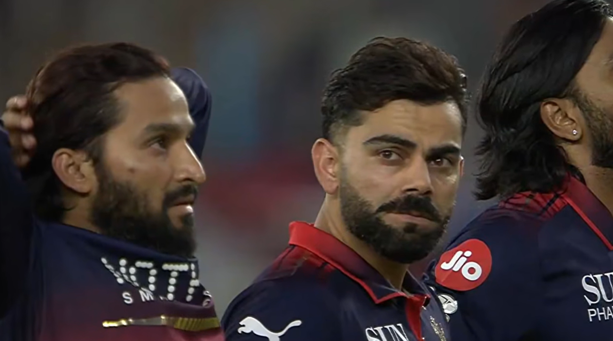
Against West Indies in Thiruvananthapuram, an unbeaten 139 off 88 - his 55th ODI century - took Kohli to 15,000 ODI runs - only the second batter ever, after Sachin Tendulkar, to get there. He reached it in his 303rd innings, 74 innings faster than Sachin did.
139 not out off 88, Thiruvananthapuram, 27 September 2026.
India chased down 296 with 50 balls to spare. This page was still being written when it happened.
Career totals as this chapter was written. Test and T20I are closed books; ODI and IPL bars are still growing.
Test whites are folded away and the T20I shirt has been handed back. But the ODI blue and the RCB red-and-gold are both still live - two IPL titles in a row, a Champions Trophy, and, just days ago, a seat next to Sachin Tendulkar as the only two men ever to reach 15,000 ODI runs.
This page is built to grow with him: the next hundred, the next trophy, and - whenever it comes - the retirement post that finally closes the whole innings. Until then, consider this a first draft.